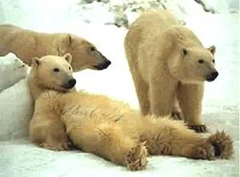
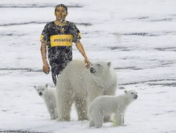

Bipolar
 De: La Frikipedia, la enciclopedia extremadamente seria.
De: La Frikipedia, la enciclopedia extremadamente seria.
 Aunque es menos frecuente, también se han reportado casos de tripolares
Se dice que una persona es bipolar cuando posee dos osos polares y además no se quiere deshacer de ellos ya que no pude aceptar siquiera que los tiene.
El nombre "bipolar" también puede referirse a aquella persona que solo vive en los polos, va del Polo Norte al Polo Sur y así sucesivamente.
Características
 Los tripolares son un 150% peor gente que los bipolares
- Reacciona muy violentamente y a veces de una forma más sutil. Dependiendo del comportamiento de sus osos, es decir, si los animales se comportan como deben la persona permanece tranquila, pero si no es así, la dueña de los osos se siente frustrada y reacciona eufórica.
- No abandonan a los osos. A pesar de que los osos traigan bastantes problemas y consecuencias graves, la persona se niega a abandonarlos ya que, aparte de todo, suelen ser amantes de la Naturaleza
- Se creen superiores. El hecho de tener osos polares en su poder hace que la persona se sienta superior y esto es porque si alguna persona se le acerca puede defenderse con esos animales gigantes. (Digo, no es como que todos los días molestes a alguien que tiene osos polares).
- Necesitan estar solos. Por el cambio en la personalidad que suele proyectarse por culpa de los polares, aquellas personas bipolares deben estar absolutamente solos para no causar daños.
Otros Datos

Cuando uno de los osos se muere, el otro se deprime
- Se dice que los osos polares están en peligro de extinción.
- Existen diferente teorías acerca de la evolución de estos primates bipolares.
- Por ser personas, son primates, conviviendo con osos polares, no tiene gran sentido.
- Esta información no tiene fuentes razonables.
- La información aquí expuesta es copiada.
- Los osos polares varían de color.
- Los bipolares no apoyan a la Ley SOPA.
- Los bipolares aman y odian al mismo tiempo.
- Los bipolares se contradicen.
- Los bipolares no tiene relación con la bisexualidad
- Los bipolares entran en depresión.
- Los bipolares son Felices.
- Los bipolares andan en la Frikipedia.
- Los bipolares odian la Internet.
Autor(es):
- Shadowmura
- LUANSAHE
- Generibot
Frikipedia 2005-2016, Licencia
GFDL 1.2 - Extraído por FrikiLeaks